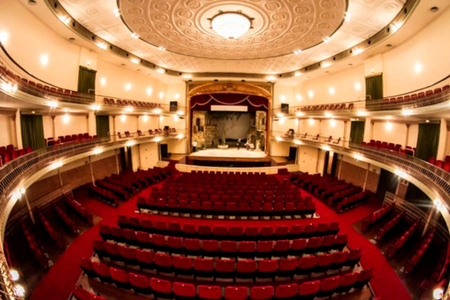

Téo Pereira
29 de junho de 2026
A vinda de um dos mais esperados musicais da última década para o Brasil em 2026 deixou a cena do teatro musical no país eufórica. Aguardado desde 2024, era esperado que o espetáculo tomasse forma no Teatro Renault, assim como todas as superproduções sediadas pela capital paulista. Contrariando as expectativas e dividindo opiniões, foi anunciado que Hadestown seria recebido pelo tradicional Theatro São Pedro.
Fui assistir ao espetáculo no último sábado (27) e qualquer receio que pudesse existir morreu ali. Sendo fiel ao texto original, ou às músicas, a obra ganha sua tradução inédita que é totalmente encaixada para a nossa vivência. O mérito é todo de Lila Gonzaga, que preserva a linguagem e o humor e as traz para o nosso português. Se as sessões esgotadas não são indicativo suficiente, eu garanto que o Theatro São Pedro, apesar de sua capacidade bem reduzida em relação ao Renault, só engrandece o espetáculo.

Theatro São Pedro [divulgação].
O templo de óperas de São Paulo conta com um espaço intimista, desenhado para projetar a voz dos solistas e conduzir obras com as mais variadas extensões vocais, e cumpre a proposta do musical como nenhum outro lugar poderia. Assim como fora idealizado para a obra, você se sente em um bar de Nova Orleans, bebendo um drink e sendo conduzido pela mistura do jazz com o folk.
A releitura de um dos contos mais longevos da mitologia grega parece ser sempre atual, e não funciona diferente dessa vez. É impossível não se lembrar dos desastres climáticos dos últimos anos e de toda a desesperança causada naqueles que foram afetados. O submundo industrial também incomoda, como uma lembrança constante do quão submissos somos ao trabalho.
A obra conta com uma equipe técnica extensa e o destaque é de Arminda de Melo, coreógrafa que trabalhou por anos como diretora de movimento. Esta é sua estreia no comando de uma grande produção e seu trabalho beira o impecável, principalmente com o coro no submundo e as Moiras, as astutas senhoras do destino. O regente José Maria e todo o corpo de músicos cedidos pela orquestra da casa também impressionam.
Quanto ao elenco, todos os papéis são um acerto. João Rubens e Kasper Damatta brilham como sempre, mas os holofotes são de Lorena Ferette, que dá vida à deusa Perséfone. Com uma extensa lista de obras brasileiras em seu currículo e algumas musicadas, como o renascimento de Calabar: O Elogio da Traição, a atriz ainda não havia pisado nos palcos das grandes produções. Hadestown apresenta Lorena de outra maneira ao público, e não decepciona nem por um segundo.
Com isso, chegamos aos nossos protagonistas, Orfeu e Eurídice são interpretados por Albano Júnior e Eduarda Fragoso, e eles são o maior triunfo do musical. Júnior passa a perfeita imagem do músico inocente e sonhador que é Orfeu e sua jornada de encantamento por Eurídice é tão dolorosa quanto é bonita. Já a Fragoso é genial, transita entre o cômico e o trágico com maestria e a durona Eurídice ganha um charme que apaixona quem assiste.
Méritos ao diretor de elenco e a toda a produção, por terem apostado em duas novas caras para o teatro musical brasileiro. O resultado é incrível e a parceria deles em cena não deixa nada a desejar, forte do início ao fim. Hadestown é imperdível, tira seu ar e o devolve no mesmo compasso. Você pode sair do teatro desolado, mas é impossível sair insatisfeito.